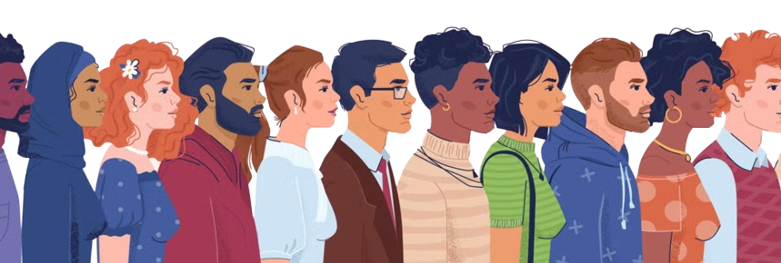

Marginalized groups are communities that experience systemic social, economic, and political exclusion because of discrimination or unequal treatment. may become marginalized based on factors such as race, ethnicity, gender, disability, religion, sexual orientation, age, or socioeconomic status. Rather than being excluded because of their abilities or character, they often face barriers created by society that make it more difficult to succeed. These barriers can limit access to important opportunities and resources, making it harder for individuals to reach their full potential. Marginalization has existed throughout history and continues to affect millions of people around the world today.1
One issue that affects marginalized groups is the use of stereotypes. A stereotype is a generalized belief about a group of people that assumes everyone in that group shares the same characteristics or behaviors. Stereotypes ignore the uniqueness of individuals and often spread inaccurate or exaggerated ideas. These stereotypes can influence how people are treated in schools, workplaces, and society. They may also affect how people see themselves, especially when negative stereotypes are repeated over long periods of time.
2